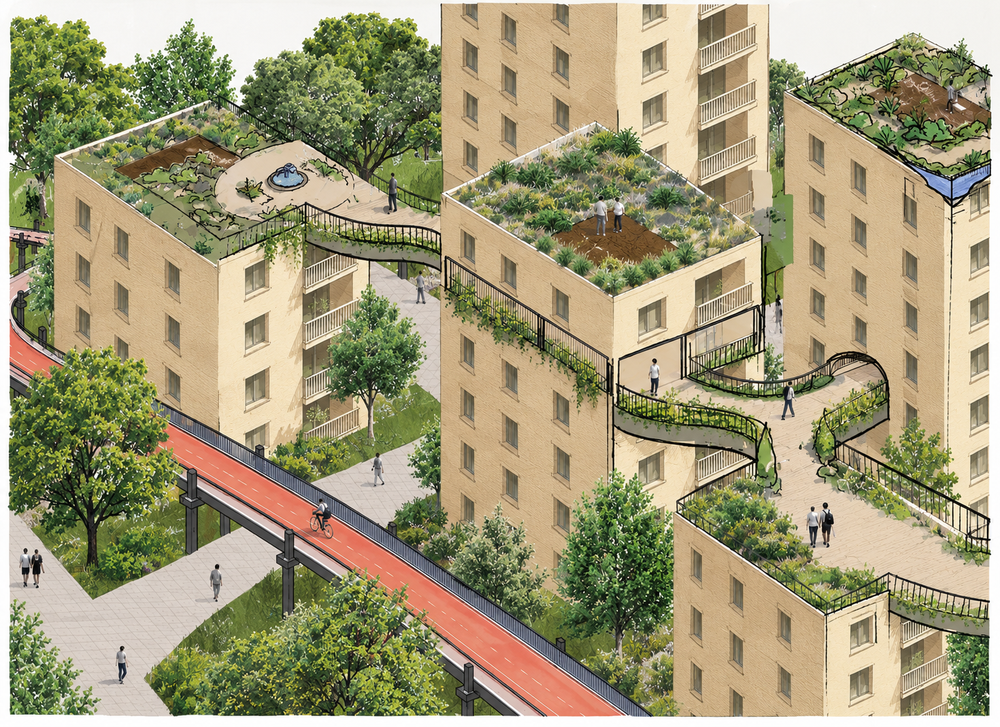

Zaanstraat — Visualising a New Neighbourhood
How do you make a future neighbourhood feel real before it exists?
As part of an MSc project developed in collaboration with the Municipality of Amsterdam, our team explored possible futures for the Zaanstraat neighbourhood. We imagined how green public spaces, shared facilities and new connections between buildings could encourage a more social and sustainable way of living.
Together with a classmate, I translated our team's ideas into a series of architectural collages and spatial illustrations. I particularly enjoyed this more conceptual side of urban design: using images not just to show what a place might look like, but to communicate how it could feel and how people might use it.
The illustrations helped bring the proposals to life, making the neighbourhood's potential character easier to imagine and discuss.
Public Green — imagining a greener and more connected neighbourhood.

The Workshop — shared spaces for making, repairing and exchanging skills.

Elevated Community — connecting rooftops to create new communal spaces above street level.
Add image filename here